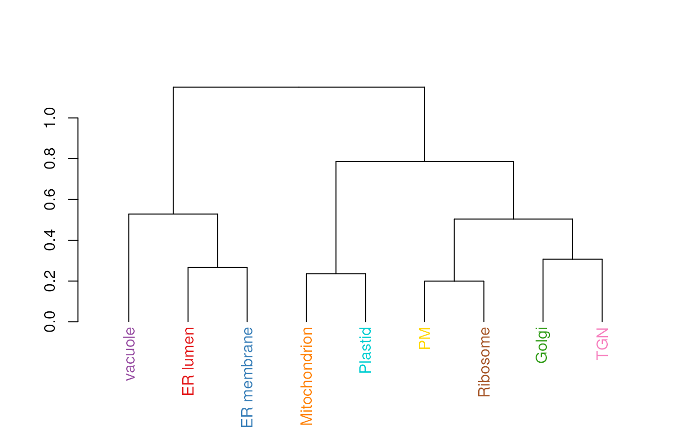

This functions calculates an average protein profile for each
marker class (proteins of unknown localisation are ignored) and
then generates a dendrogram representing the relation between
marker classes. The colours used for the dendrogram labels are
taken from the default colours (see getStockcol) so
as to match the colours with other spatial proteomics
visualisations such as plot2D.
Arguments
- object
An instance of class
MSnSet.- fcol
Feature meta-data label (fData column name) defining the groups to be differentiated using different colours. Default is
markers.- distargs
A
listof arguments to be passed to thedistfunction.- hclustargs
A
listof arguments to be passed to thehclustfunction.- method
A
functionto average marker profiles. Default ismean.- plot
A
logicaldefining whether the dendrogram should be plotted. Default isTRUE.- ...
Additional parameters passed when plotting the
dendrogram.
Value
Invisibly returns a dendrogram object, containing the
hierarchical cluster as computed by hclust.
Examples
library("pRolocdata")
data(dunkley2006)
mrkHClust(dunkley2006)
